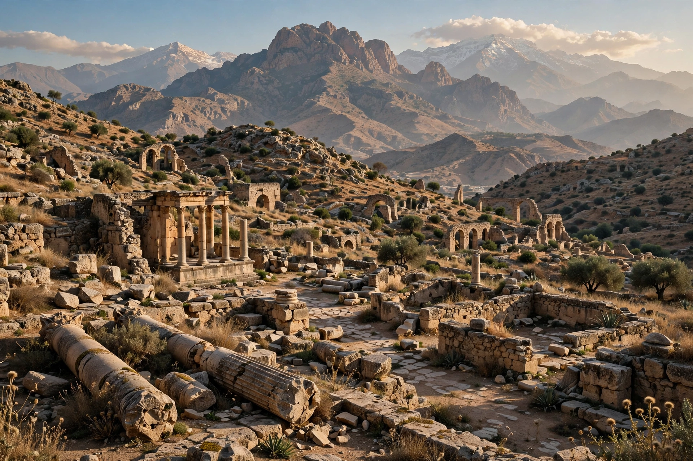

Numidia was an ancient Berber kingdom in North Africa, roughly corresponding to northern modern-day Algeria, with parts of Tunisia and Libya. Flourishing in the 3rd and 2nd centuries BC, it became a major power in the western Mediterranean before its absorption into the Roman Republic.

| Kingdom of Numidia | |
|---|---|
| Capital | Cirta |
| Common languages | Numidian, Punic, Latin |
| Government | Monarchy |
| Established | c. 202 BC |
| Disestablished | 46 BC / AD 429 |
| Today part of | Algeria, Tunisia, Libya |
Numidia's inhabitants, the Numidians, were Berber peoples organised in tribes including the Massylii in the east and Masaesyli in the west. During the Second Punic War, King Masinissa allied with Rome against Carthage, unifying Numidia after the Battle of Zama in 202 BC. Masinissa's long reign (c. 202–148 BC) made Numidia prosperous through agriculture.
His grandson Jugurtha fought Rome in the Jugurthine War (112–105 BC), described by Sallust, before being captured. Numidia was later divided and in 46 BC Julius Caesar annexed eastern Numidia as the province of Africa Nova after the Battle of Thapsus.
The kingdom exported grain, olive oil, and famed Numidian cavalry. Its capital Cirta (modern Constantine) was a major commercial centre. See also Roman Empire, Carthage and Berbers.
Numidian kings left monumental tombs such as the Medracen and the Royal Mausoleum of Mauretania. The name survives in historical scholarship on North Africa.